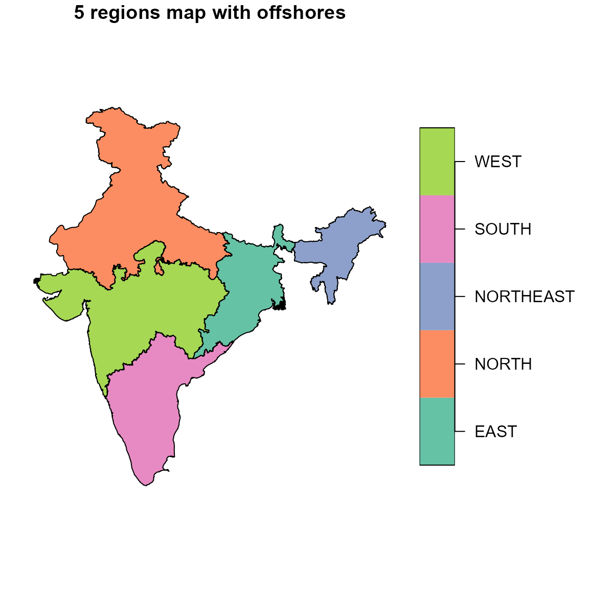
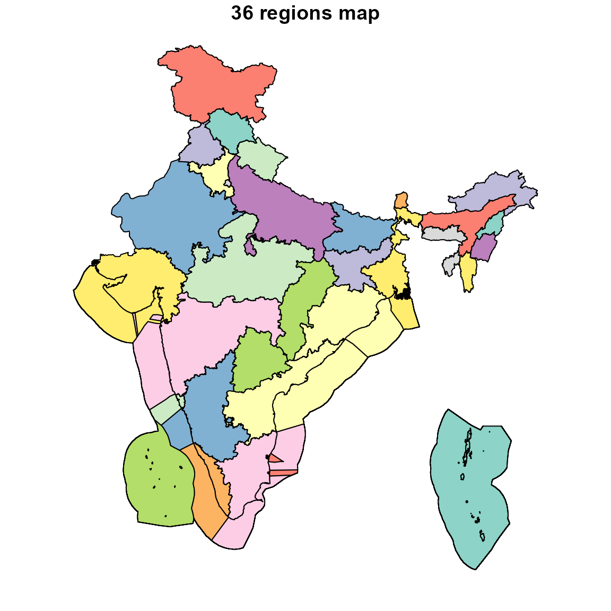
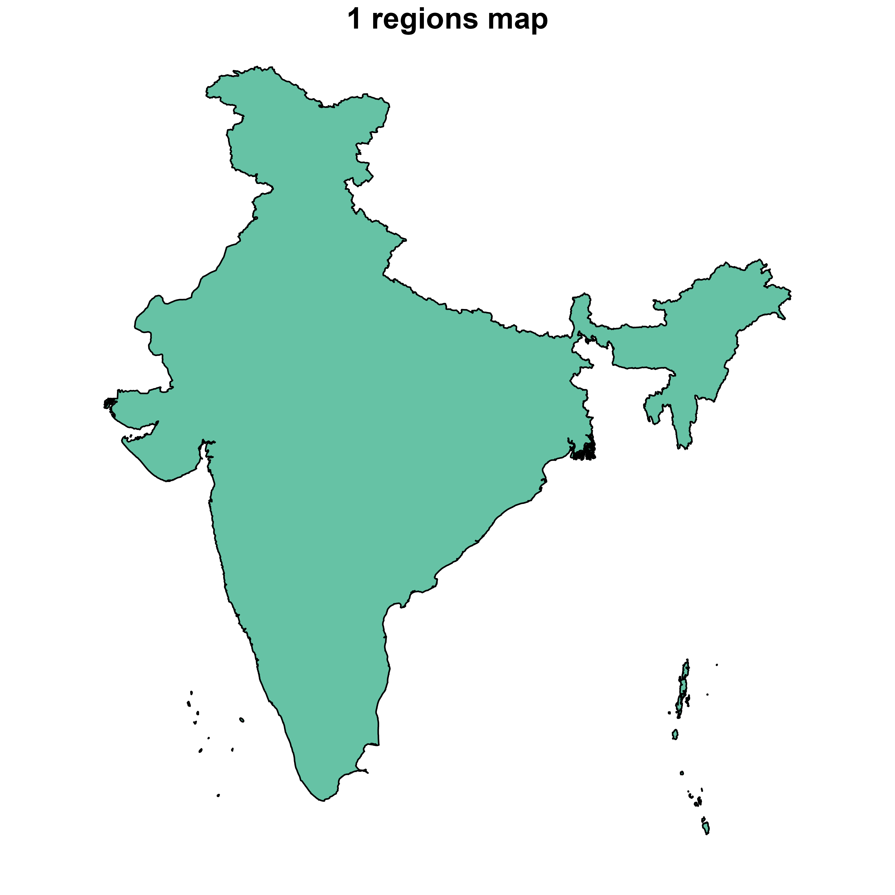

Geographical information system (GIS) files, or maps are used in the
project for identification of locations of solar and wind energy
potential and visualisation of the model data and modeling results.
IDEEA package has embedded maps with alternative regional divisions,
starting from one region (the country level) to 37 regions (each state
as a region) or 46 zones where few regions are split into several
distant territories (such as Puduchery). The maps are available in
simple feature (sf) format and can be called using
the get_ideea_maps function:
library(IDEEA)
ideea_sf <- get_ideea_map()
plot(ideea_sf["region"], main = paste0(length(unique(ideea_sf$region)),
" regions map with offshores"))
The function returns sf object with region short
(region or reg{N}) and long names
(name), names with offshore areas (reg_off),
as well as further information (see ?get_ideea_map for
details).
get_ideea_map() # returns 5 regions by default
#> Simple feature collection with 5 features and 6 fields
#> Geometry type: GEOMETRY
#> Dimension: XY
#> Bounding box: xmin: 68.1862 ymin: 8.0788 xmax: 97.4117 ymax: 37.0776
#> Geodetic CRS: WGS 84
#> # A tibble: 5 × 7
#> region name mainland offshore reg1 name1 geometry
#> <chr> <chr> <lgl> <lgl> <chr> <chr> <GEOMETRY [°]>
#> 1 EAST Eastern Reg… TRUE FALSE IND India MULTIPOLYGON (((86.8119 …
#> 2 NORTH Northern Re… TRUE FALSE IND India MULTIPOLYGON (((80.0703 …
#> 3 NORTHEAST North-Easte… TRUE FALSE IND India POLYGON ((95.2373 26.679…
#> 4 SOUTH Southern Re… TRUE FALSE IND India MULTIPOLYGON (((79.3174 …
#> 5 WEST Western Reg… TRUE FALSE IND India MULTIPOLYGON (((68.2482 …Administratively, India is organized into 28 states and 8 Union territories, initially restructured according to linguistic lines as per The States Reorganization Act 1956. In a specific modelling framework that allows for regional modification, a GIS map initially divides the country into 46 regions, incorporating all states and Union territories with certain modifications. This division counts Daman and Diu as separate entities and treats each district of Puducherry as its own region, reflecting its composition of formerly separate French colonies. For simplification, alternative regional models consolidate these areas differently, reducing the number of regions to 36, 34, 32, 7, and 5, by merging split areas (such as Puducherry) into a nearby entity and combining Daman and Diu. This approach provides examples of alternative levels of details for modeling India’s energy system, where 32-37 aggregation options are closest to the administrative boundaries, but has splits and aggregates of some regions with no political context. Scholars can bring to use their own shape-files and regional divisions for their studies, publications, and consulting.
ideea_sf <- get_ideea_map(nreg = 36, offshore = TRUE, islands = TRUE)
# ideea_sf
plot(ideea_sf["region"], main = paste0(length(unique(ideea_sf$region)), " regions map"))
The IDEEA map can me acquired for 1, 5, 7, 32, 34, 36, 37 or 46
regions. The offshore and islands arguments
allow to include or exclude offshore areas and islands, respectively.
The rename argument allows to rename the columns to
region and name for the region short and long
names. The reg_off argument allows to add a column with
offshore areas to the region names. The aggregate argument
allows to aggregate geometries of regions with the same name.
ideea_sf <- get_ideea_map(nreg = 1)
plot(ideea_sf["region"], main = paste0(length(unique(ideea_sf$region)), " regions map"))
The mapping of alternative regional divisions can be found in the
ideea_data$reg_tbl data frame where every aggregation is
represented in a separate colun with names reg{N} and
name{N}. The offshore and
mainland columns allow to distinguish between offshore and
mainland areas.
ideea_data$reg_tbl |> head()
#> name46 reg46 name37 reg37 name36 reg36
#> 1 Andaman and Nicobar AN Andaman and Nicobar AN Andaman and Nicobar AN
#> 2 Arunachal Pradesh AR Arunachal Pradesh AR Arunachal Pradesh AR
#> 3 Assam AS Assam AS Assam AS
#> 4 Bihar BR Bihar BR Bihar BR
#> 5 Chandigarh CH Chandigarh CH Chandigarh CH
#> 6 Chhattisgarh CT Chhattisgarh CT Chhattisgarh CT
#> name34 reg34 name32 reg32 name7
#> 1 Andaman and Nicobar AN Andaman and Nicobar AN Andaman and Nicobar
#> 2 Arunachal Pradesh AR Arunachal Pradesh AR North-Eastern Region
#> 3 Assam AS Assam AS North-Eastern Region
#> 4 Bihar BR Bihar BR Eastern Region
#> 5 Chandigarh CH Punjab and Chandigarh PBH Northern Region
#> 6 Chhattisgarh CT Chhattisgarh CT Western Region
#> reg7 name5 reg5 name1 reg1 mainland offshore
#> 1 AN Eastern Region EAST India IND FALSE FALSE
#> 2 NORTHEAST North-Eastern Region NORTHEAST India IND TRUE FALSE
#> 3 NORTHEAST North-Eastern Region NORTHEAST India IND TRUE FALSE
#> 4 EAST Eastern Region EAST India IND TRUE FALSE
#> 5 NORTH Northern Region NORTH India IND TRUE FALSE
#> 6 WEST Western Region WEST India IND TRUE FALSEAlternative aggregations can be added using this table and the
sf object
get_ideea_map(aggregate = F, rename = FALSE, islands = T).